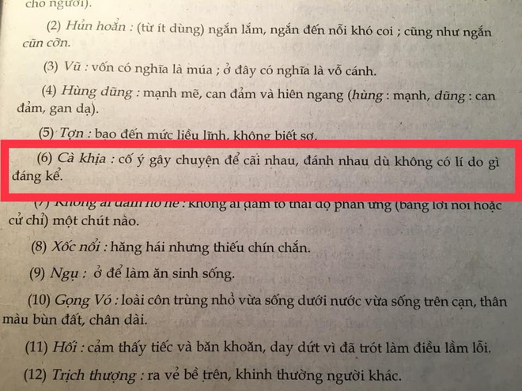

HyperText Markup Language, commonly abbreviated as HTML, is the standard markup language used to create webpages.
Along with CSS,and JavaScript, HTML is a cornerstone technology used to create web pages, as well as to create user interfaces for mobile and web applications.

HTML
XHTML
HTML5